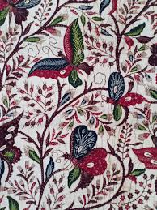

Tentang Bangkalan
Bangkalan adalah perpaduan sempurna antara sejarah, tradisi, dan kemajuan masa depan. Sebagai rumah bagi Universitas Trunojoyo Madura, Bangkalan kini menjadi pusat peradaban baru bagi generasi muda.
Masyarakatnya yang hangat menjunjung tinggi nilai religi dan kekeluargaan, menjadikan kabupaten ini tempat yang nyaman bagi siapa pun yang berkunjung.
Data Wilayah
| Semboyan | "Bektonah Ongghe" |
| Ikon | Jembatan Suramadu |
| Edukasi | Univ. Trunojoyo |
Potensi Daerah
Kekayaan Alam, Budaya, dan Kuliner Unggulan

Batik Tanjung Bumi
Keindahan mahakarya batik tulis Madura dengan motif warna yang tegas dan berani.

Bukit Jaddih
Eksotisme tebing kapur putih yang memukau, menjadi destinasi favorit fotografer dunia.

Bebek Sinjay
Cita rasa legendaris bebek goreng khas Bangkalan yang dicari pecinta kuliner Nusantara.